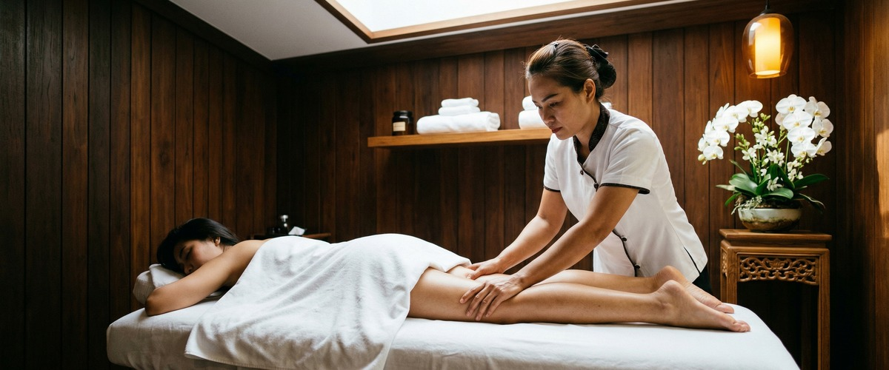
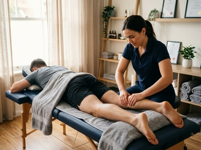
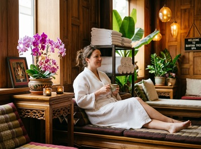

If you carry tension from the gym, the pitch, or simply a long week at your desk, sports massage in Glasgow at Serendipity Massage Therapy & Wellness is built around exactly that.

It works on the muscles and soft tissues that take the most strain, helping you recover faster, move better, and stay injury-free.
Sports massage uses a set of hands-on techniques applied with purpose. These include long strokes to warm the tissue and boost blood flow, deep kneading to release muscle knots, friction work to break down scar tissue, and assisted stretching to restore range of motion.

Unlike a relaxation massage, it applies firm, direct pressure to the areas that need it most. The goal is to address the root of the problem, not just the surface.
Sessions are shaped around what your body needs. Whether you are preparing for an event, recovering after one, or managing tension that has built up over time, the approach is adjusted to suit you.
Glasgow sports massage is not only for professional athletes. It is for anyone whose body absorbs repeated physical demands: runners, cyclists, gym-goers, and recreational football and rugby players. It suits anyone who lifts, carries, or stands for long periods too.
It is equally useful for office workers whose postural tension has built to the point where stretching no longer helps. If your body is working hard, it benefits from this kind of focused care.
Your session begins with a brief consultation. Your therapist will ask about your activity level, any areas of concern, and what you want from the treatment. You can book your session online and note any specific issues when you arrive.
Most clients undress to their underwear and are draped throughout. Sessions run 60 minutes as standard, with 30 and 90 minute options also available.

Pressure is firm but always within a range you can tolerate. You may feel some discomfort in tight areas, followed by a clear sense of release. Most clients leave feeling lighter and more mobile.
Some people notice mild muscle soreness in the 24 hours after, much like post-exercise fatigue. Drinking water and moving gently afterwards helps your body respond well.
Serendipity Massage Therapy & Wellness is a professional team practice on Hope Street in Glasgow city centre. Every therapist is trained to a consistent standard using techniques developed by head therapist Jariya Malone. Every treatment is tailored to the individual.
Whether you are new to massage or coming in for regular maintenance, you will receive the same focused, unhurried attention. You can book a sports massage online or call us on 0141 673 6630 to discuss what would work best for you.
Not at all. Sports massage works just as well for people who carry tension from desk work, manual labour, or everyday physical stress. The techniques address soft tissue restriction no matter what caused it. If your muscles are tight and your movement is limited, sports massage can help.
Most clients undress to their underwear, which lets the therapist work directly on the muscles. You will be draped throughout the session, so only the area being treated is uncovered. If you prefer to keep clothing on, let your therapist know and they will adapt.
Most people feel a clear sense of relief and better movement straight away. It is normal to have mild muscle soreness for up to 24 hours after, especially after your first session or where tension has been significant. Staying hydrated and moving gently helps your body settle into the benefits.
For people in regular training, every two to four weeks is a good rhythm. It supports recovery and helps prevent injury. If you are managing a specific issue or preparing for an event, more frequent sessions may suit you better. Your therapist will advise after your first treatment.
Swedish massage uses flowing strokes at lighter pressure, focused mainly on relaxation. Sports massage applies deeper, more targeted work — including friction, compression, and assisted stretching — to address specific muscle problems. If you want to unwind, a Swedish massage is a great choice. If you have tension, tightness, or recovery needs, sports massage is the better fit.
In many cases, yes. Sports massage can support recovery from soft tissue injuries such as muscle strains and overuse conditions. It is not suited to the acute phase right after an injury. Tell your therapist about any injuries or health conditions before your session so they can adapt the treatment safely.